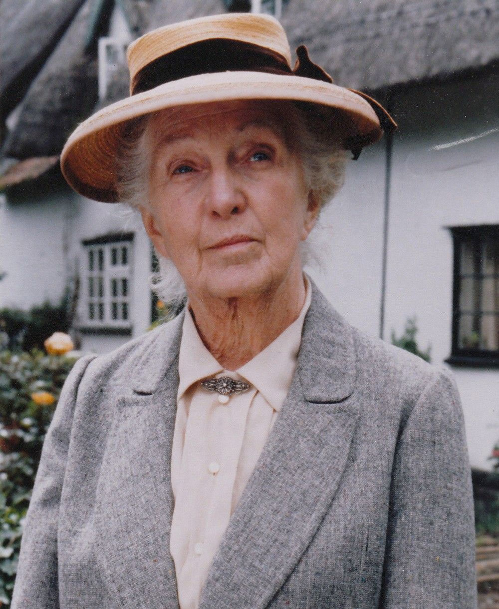

Hercule Poirot and Miss Marple
Christie's first book, The Mysterious Affair at Styles, was published in 1920 and introduced the detective Hercule Poirot, who became a long-running character in Christie's works, appearing in 33 novels and 54 short stories.
Christie became increasingly tired of Poirot, much as Sir Arthur Conan Doyle had grown weary of his character Sherlock Holmes. By the end of the 1930s, Christie wrote in her diary that she was finding Poirot "insufferable", and by the 1960s she felt that he was "an egocentric creep".
However, unlike Conan Doyle, Christie resisted the temptation to kill her detective off while he was still popular. She saw herself as an entertainer whose job was to produce what the public liked, and the public liked Poirot. She did marry off Poirot's companion Captain Hastings in an attempt to trim her cast commitments.
Miss Jane Marple was introduced in the short-story collection The Thirteen Problems in 1927. Although Christie states that, "Miss Marple was not in any way a picture of my grandmother; she was far more fussy and spinsterish than my grandmother ever was", her autobiography does establish a firm connection between the fictional character and Christie's maternal great-aunt Margaret Miller ("Auntie-Grannie")[f] and her "Ealing cronies". Marple appeared in 12 novels and 20 stories.
In contrast to Poirot, Christie was fond of Miss Marple. However, the Belgian detective's titles outnumber the Marple titles more than two to one. This is largely because Christie wrote numerous Poirot novels early in her career, while The Murder at the Vicarage remained the sole Marple novel until the 1940s. Christie never wrote a novel or short story featuring both Poirot and Miss Marple. In a recording discovered and released in 2008, Christie revealed the reason for this: "Hercule Poirot, a complete egoist, would not like being taught his business or having suggestions made to him by an elderly spinster lady. Hercule Poirot – a professional sleuth – would not be at home at all in Miss Marple's world.".
Poirot is the only fictional character to date to be given an obituary in The New York Times, following the publication of Curtain. It appeared on the front page of the paper on 6 August 1975.